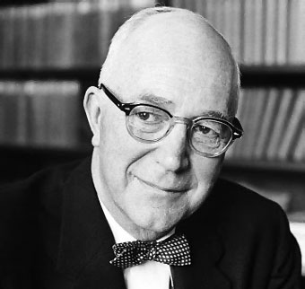
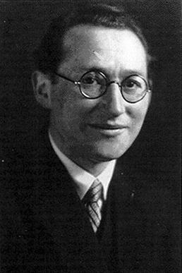

Gordon Allport earned an A.B. degree in Philosophy and Economics from Harvard in 1919. He was a trailblazer in the field of human personality research, standing out as a groundbreaking figure in an era dominated by behaviorism and psychoanalytic approaches. Born in Montezuma, Indiana.
Allport's impact on the field of psychology remains an enduring legacy for generations to come.

Kurt Lewin's contributions included the below, revolutionizing our understanding of human behavior.
At the heart of Lewin's work lies his behavior equation: "B = f(P, E)."
Born in Germany in 1890, Kurt Lewin later became a German-American psychologist. He was instrumental in founding the Center for Group Dynamics in the United States. In addition to his influential theories, Lewin introduced the concept of "genidentity," a notion that continues to shape how we comprehend identity and individuality.
